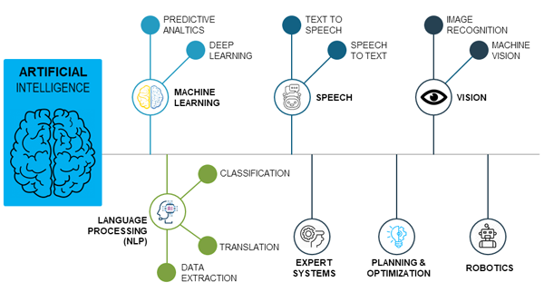
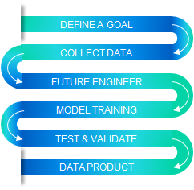

It’s likely that you’ve interacted with some form of AI in your day-to-day activities. If you use Gmail, for example, you may enjoy the automatic e-mail filtering feature. If you own a smartphone, you probably fill out a calendar with the help of Siri, Cortana, or Bixby. If you own a newer vehicle, perhaps you’ve benefited from a driver-assist feature while driving.
Artificial intelligence’s progress is staggering. Efforts to advance AI concepts over the past 20 years have resulted in some truly amazing innovations. Big data, medical research, and autonomous vehicles are just some of the incredible applications emerging from AI development.
With each new addition to the AI toolbox, companies that don't utilize all of the advances available will fall behind in productivity and efficiency. This Artificial Intelligence paradigm holds true across industries. You don't need to work in technology to use artificial intelligence to your benefit. If your company does work in technology, it's likely that you're working on some applications that improve on AI.
AltaFuturis helps business to monitor and develop various machine learning and deep learning models by creating models that make use of visual modelling tools. This helps business to quickly identify patterns and take crucial decisions faster. Models in accordance with various end results can be developed, including:
Most of you will be familiar with the standard systems development lifecycle (SDLC) along with how different methodologies and technologies are shaping it. It is important to note that AI development will bring a new set of challenges to the field. We can split the AI development lifecycle into these steps: ideation and data discovery, prioritizing MVPs, and developing MVPs into fully-fledged products.
At this first stage, the focus should be on two key things: the end-user of the ML product and which data pools are available. By approaching the problem from two independent sides, these techniques can help to quickly narrow down the ML product opportunities available. During this phase, AltaFuturis can benefit from their knowledge of the machine learning space in order to better understand the difficulty to which certain problems can be solved. Once the data is discovered, it needs to be cleaned and prepared. This specific task is normally done in linear steps, which do not fit neatly into typical project methodologies like Agile or Waterfall, although they can be forced into Sprints.
The truth that it’s better to have a working prototype of a smaller product, rather than an unfinished large one, still stands here with machine learning products. New Machine Learning MVPs would be prioritized based on the speed of delivery and their value to overall business objectives of client. Preparing these MVPs in classic Agile fashion is a good idea, and the AltaFuturis team would focus on delivering ML models based on the continually improving datasets prepared independently by the data team. An important distinction here is that the data team does not necessarily need to work via the same Sprint structure as the team building the MVP.
This step is where data infrastructure becomes key. If the ML product requires high-frequency API access from around the globe by client organization, then AltaFuturis team consider how to scale the infrastructure up to support the ML product. This is where changes to the ML modules have to be carefully evaluated in order to avoid breaking the performance of the current product. Retraining the ML modules with new algorithms or datasets does not always bring a linear performance increase—therefore, a substantial amount of testing is required prior to live deployment.